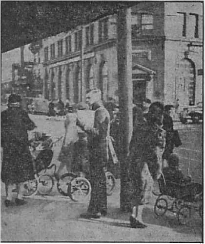
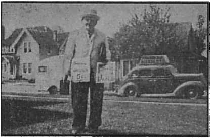
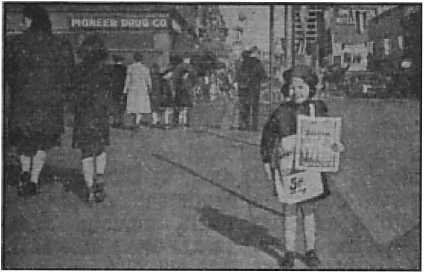

J0UR1 iCT, HOPE AND COURAGE
___,Uiat?
How it encroaches upon Britain
I
How to enter into a perpetual rest
Education
Invention
One Dollar a Year Five Cents a Copy
Vol. XXIII No. 601 September 30, 1942
$1.25 In Canada and Foreign Countries
Published Every Other Wednesday
Contents
AD Nations Drunk (WBBR Broadcast)
Anslo-Carholie Betrayal of Britain
The New Government
In the San Francisco Bay Region
“Thy Word Is Truth”
Submarines Kill the Birds Also
The Theocracy the Only Solution
Presenting “This Gospel of the Kingdom”
When to Use Different Translations
Index to Volume XXIII of Consolation
Published every other Wednesday by
WATCHTOWER BIBLE AND TRACT SOCIETY, INC.
117 Adams St., Brooklyn, N. Y., U. S. A.
Editor Clayton J. Woodworth
Business Manager Nathan H. Knorr
Five Cents a Copy
$1 a year in the United States
$1.25 to Canada and all other countries
NOTICE TO SUBSCRIBERS
Remittances: For your own safety, remit by postal or express money order. When coin or currency is lost in the ordinary mails, there is no redress. Remittances from countries other than those named below may be made to the Brooklyn office, but only by International postal money order.
Receipt of a new or renewal subscription will be acknowledged only when requested. Notice of Expiration is sent with the journal one month before subscription expires. Please renew promptly to avoid loss of copies. Send change of address direct to us rather than to the post office. Your request should reach us at least two weeks before the date of issue with which it is to take effect. Send your old as well as the new address. Copies will not be forwarded by the post office to your new address unless extra postage is provided by you.
Published also in Greek, Portuguese, Spanish, and Ukrainian.
OFFICES FOR OTHER COUNTRIES
England 34 Craven Terrace, London, W.2
Australia 7 Beresford Road, Strathfleld, N.S.W. South Africa 623 Boston House, Cape Town
Mexico Calzada de Melchor Ocampo 71. Mexico, D.F. Brazil Caixa Postal 1319, Rio de Janeiro
Argentina Calle Honduras 5646-48, Buenos Aires Entered as second-class matter at Brooklyn, N. Y., under the Act of March 3. 1879.
Tons of Propionate Salt
♦ Nature is so ordered that when bread gets a few weeks old one will know better than to eat it, because it will be moldy. But nature is now far behind in the race for profits and other things. It is estimated that in 1942 half a billion loaves of bread will be “protected against mold” by the addition of propionate salt. Along with the plaster of Paris to make it white, and the nicotinic acid (now called “niacin”) to make it “enriched”, maybe after a while it will be possible to build a loaf without any flour in it at all. And also 1 maybe, by swallowing a little cement along with it, the needless waste of tombstones can be saved. The corpses can be set up in the cemetery and the inscriptions chiseled in the walls of their abdomens.
More “Fortified” Bread
♦ Pretty soon you will be eating bread that has everything in it but flour. That seems to be the drift of the recent patents. General Mills, Inc., Minneapolis, owns patent No. 2,239,543. The patent admits that in the milling process the valuable minerals and vitamins are removed. The patent proposes to put them back by adding copper, iron, manganese, phytic acid and phosphoric acid; so now, when you are eating, if you chance to run across an old horseshoe or a piece of dog chain, don’t think anything of it; you are merely keeping up with the Joneses.
A Throat Microphone
♦ The Western Electric Company has invented a throat microphone, which picks up the vibrations from the flyer’s vocal cords, and no matter how the motors roar and the machine guns are chattering he gets his message through. His mouth and eyes are wholly disengaged for other work. He can talk and work at the same time.
“And in His name shall the nations hope.”—Matthew 12:21, A.R.V.
Volume XXIII
Brooklyn, N. Y,, Wednesday, September 30, 1S42
Number 601
All Nations Drunk
(A WBBR* Broadcast)
* WBBR, 1330 kilocycles, has been broadcasting the message of The Theocracy regularly, 28| hours per week, for more than 18 years, from its mail) studio, at 124 Columbia Heights, Brooklyn, N. Y. It serves the metropolitan area, some 200 miles in diameter. As a novelty, it is believed that many readers of Consolation, living outside of the hrea served by the station, will enjoy one of the recent broadcasts, which is reproduced herewith as given over the air.
ANNOUNCER: Did you ever hear of a nation getting drunk? Could you imagine such a thing as all the nations getting drunk? You may be saying to yourself: “How could a whole nation get drunk ? Such a thing has never happened. Christian nations wouldn’t get drunk.” ... We cannot be wiser than the Word of God, and it says: “Babylon hath been a golden cup in the Loed’s hand, that made all the earth drunken: the nations have drunken of her wine; therefore the nations are mad.” . . . John Witness, one of Jehovah’s witnesses, is again visiting Mr. and Mrs. Goodwill ip their home. They’re probably listening to this very announcement. Let’s drop in on them and see.
Man: Did you hear what that announcer said on the radio, Mr. Witness ?
Witness: I didn’t quite catch it all; he was talking just as I came in. What did he say?
Man: He was quoting a scripture from one of the prophecies about the nations drinking wine, getting drunk and being mad. Mrs. Goodwill’s trying to find where it is . . . Did you find it, dear?
Wife: Not yet! He didn’t say just where it was; so I don’t know just where to look. I’d like to read that verse again; that’s the first time I ever heard of a nation getting drunk.
Witness: D’you mind if I show you how to find any verse in the Bible?
Wife: Can you do that? That would certainly be valuable.
Witness: Yes, it’s quite simple, Mrs. Goodwill. Anyone can do it. You see this comparatively small book.
Wife: Uh huh.
Witness: It’s a concordance. Do you remember one of the principal words in that text he quoted?
Man: Yes, “drunken.”
Witness: Well, we just turn to the word “drunken” in the concordance and it will give you the texts in the Bible with that word in.
Witness: Let’s see now—“drunken”— Here we are. Here’s one in Job 12, verse 25.
Man: What does it say?
Witness: ‘... and he maketh them to stagger as a drunken man.’
Man: No, that wasn’t it. But that sounds like a good one— Who is that text talking about?
Witness: The nations. Just like the other text. Just listen to this. “He increaseth the nations, and destroyeth them; he enlargeth the nations, and straiteneth them again. He taketh away the heart of the chief of the people of the earth, . . . They grope in the dark without light, and he maketh them to stagger like a drunken man.”
Wife: The chief of the people stagger like drunken men! What can that mean?
Witness: Wait until we find the other text, Mrs. Goodwill, and then perhaps we can find the meaning. Do you remember another word in that text the announcer quoted, Mr. Goodwill?
Man: Yes, I remember distinctly he mentioned the “nations”.
Witness: Nations—nations—here’s one in Jeremiah, chapter 51, verse 7. Got your Bible handy, Mr. Goodwill?
Man: You bet! I bought one o’ my own during the week. I’m gonna prove these things for myself, by God’s help. Did you say Jeremiah 51, verse 7?
Witness: Yes.
Man: {turning leaves') Jeremiah— Jeremiah—here it is! Jeremiah 51, verse 7. “Babylon hath been a golden cup in the Lord’s hand, that made all the earth drunken; the nations have drunken of her wine; therefore the nations are mad.” Boy! that’s the one. What d’you think of that, Mr. Witness?
Witness: What do you think, Mrs. Goodwill ?
Wife: I’m sure I don’t know what it means: It says the nations have been drinking wine, have been made drunk and are mad. They’re certainly mad enough to kill each other now. Whatever kind of wine could do that ?
Witness: How about you, Mr. Goodwill? What’s your idea?
Man: Well, I couldn’t say to be sure. I notice that other text you read, from Job, said the chief of the people of earth grope in darkness and stagger like drunken men. That’s what it said, isn’t it? Who are these chief ones? If we knew that, it might help us to understand the rest.
Witness: I think you’re on the right track there, Mr. Goodwill. D’you remember last week you read some verses from the 56th chapter of Isaiah?
Man: I remember. It spoke of the shepherds that cannot understand.
Wife: I remember it also said the shepherds were watchmen who are blind! And, Mr. Witness, you said it was a description of the religious leaders of Jesus’ day and also in our day.
Witness: That’s right. I see you both remember pretty well. Suppose you read those verses again, Mrs. Goodwill. That was Isaiah 56, verses 10 and 11. Read them slowly.
Wife: Isaiah 56, verses 10 and 11: “His watchmen are blind; they are all ignorant, they are all dumb dogs, they cannot bark; sleeping, lying down, loving to slumber. Yea, they are greedy dogs which can never have enough, and they are shepherds that cannot understand; they all look to their own way, every one for his gain from his quarter.” We read those verses last week, didn’t we?
Witness: We certainly did! But we didn’t read the 12th verse; and that’s the one we want right now. Read it, Mrs. Goodwill, please; will you?
Wife: Verse 12: “Come ye, say they, I will fetch wine, and we will fill ourselves with strong drink; and tomorrow shall be as this day, and much more abundant.”
Man: Read that verse again, dear, d’you mind? I just want to make sure I got a point clear as to who gets drunk.
Wife: “Come ye, say they.”
Man: Who d’you suppose it refers to when it says, “Gome ye, say they?”
Witness: That’s referring to the watchmen, the shepherds. There’s none other spoken of.
Man: That’s just what I thought. But go ahead, dear, let’s hear the rest of the verse.
Wife: “Come ye, say they. I will fetch wine, and we will fill ourselves with strong drink; and tomorrow shall be as this day, and much more abundant.” What was your point?
Man: D’you remember the question you asked Mr. Witness?
Wife: Yes, I do. I asked him who were the “chief of the people” in that text he quoted from Job.
Man: Right! That’s my point. Who are they, Mr. Witness?
Witness: Well, what does it say happened to them?
Man: It says—wait a minute till I find it. I’ll read it, then I’ll be sure I have it right. Here it is. “... they grope in the dark without light.” And then it says “he maketh them to stagger like a drunken man”.
Witness: Isaiah says, “His watchmen are blind; they are all ignorant . . . they are shepherds that cannot understand.”
Man: Right! that’s what it says.
Witness: Well, what makes themblind ? What makes them ignorant of what’s happening on the earth, so that their senses are so dulled? They’re like dogs that give no warning bark—they’re dumb dogs, as Isaiah says. What makes them dumb? Why do they lack understanding ?
Man: Because they’re cockeyed drunk! That’s why!
Witness: That’s the answer, Mr. Goodwill. Because they’re drunk. And that’s what Job meant when he said the ‘chief of the people stagger as a drunken man’. The chief ones are their leaders, particularly their religious leaders. They are the shepherds. They are the watchmen.
Wife:'But you don’t mean they are literally drunk with literal wine and strong drink, do you?
Witness: No, Mrs. Goodwill. Isaiah makes that point clear in another place. He shows it isn’t literal wine. Suppose you turn to Isaiah 29, verses 9 to 11. Read carefully, so we get all the points.
Wife: Isaiah 29, verses 9, 10 and 11: “. . . they are drunken, but not with wine; they stagger, but not with strong drink. For the Lord hath poured out upon you the spirit of deep sleep, and hath closed your eyes: the prophets and your rulers, the seers hath he covered. And the vision of all is become unto you as the words of a book that is sealed.”
Witness: Do you understand that, Mrs. Goodwill?
Wife: I understand that it says they’re drunk and stagger, but not with literal strong drink. And that they’re blind and they’re asleep as it were. But I don’t quite understand what made ’em so if it isn’t literal wine and strong drink. I’d like that point made clear.
Witness: Let’s clear that point up, then. Mr. Goodwill, suppose you read that 12th verse of Isaiah 56 again; there’s a point I want to call attention to.
Man: Isaiah 56—Boy! got it first shot. I’m beginning to know where these different books are now. Isaiah 56:12. “Come ye, say they, I will fetch wine, and we will fill ourselves.”
Witness: (interrupting) What are they going to do ?
Man: Fetch wine and fill themselves.
Witness: They’ll need more and more wine then, won’t they, to do that?
Man: That’s right! And they go on to say “and tomorrow shall be as this day, and much more abundant”.
Witness: Now, if this isn’t literal wine, what d’you think it could be?
Man: Well, it’s certainly something that makes them like drunken men. You know how they go. “Come on, boys; let’s have another drink! (drunkenly) Hail! the gang’s all here; what the—”
Wife: Yes, dear, that’s all right; we know the rest of it.
Man: Well, if the Bible says they’re drunk, why, they’re just drunk. Whatever it is that makes ’em drunk, I don’t know; but they’re drunk, that’s certain. And if they stagger, as it says they do, then they’re cockeyed drunk. When a fellow’s so full he staggers, then he can’t see where he’s going-—everything kinda goes round and round. But what makes ’em drunk?
Witness: Well, what do the religious keep saying we need more of?
Wife: Religion; we need more religion! Religion will save the world!
Man: That’s right! “Tomorrow shall be as this day, and much more abundant.” Give us more religion and we’ll have peace and prosperity. Why, there it is!
Wife: Could that be what it means, Mr. Witness? Does this wine represent religion ?
Witness: That’s what the Bible shows, Mrs. Goodwill. Wine is used to represent two separate and distinct things in the Bible. In the true manner it represents God’s word of truth. The effects of drinking this wine is joy of heart and mind and stimulation to further activity in the interests of God’s kingdom.
Wife: And the other use of wine, what does that represent?
Witness: Just as we’ve found. The false doctrines of men and devils—the traditions of men, particularly as expressed in religious practices—are pictured as “wine and strong drink” which makes the drinkers thereof filthily drunk: gives them the blind staggers and makes them mad.
Man: That’s certainly a vivid picture. Can you give us any scripture to support your statements, Mr. Witness?
Witness: Yes, I can, Mr. Goodwill. I wouldn’t make those statements unless I knew God’s Word proved them. My opinion doesn’t amount to anything anyway. God’s Word is the only true and safe guide.
Wife: Where does wine represent God’s Word of truth?
Witness: D’you want to read it, Mr. Goodwill? Isaiah 55, verses 1 and 2.
Man: Isaiah 55, verses 1 and 2: “Ho, every one that thirsteth, come ye to the waters, and he that hath no money; come ye, buy and eat; yea, come, buy wine and milk without money, and without price. Wherefore do ye spend money for that which is not bread ? and your labour for that which satisfieth not? Hearken diligently unto me, and eat ye that which is good, and let your soul delight itself in fatness.”
Wife: That’s the first time I ever saw that point clearly! God’s Word is spoken of as wine and as milk and also as bread. Why, of course! The apostle Peter speaks of the “sincere milk of the word”. I remember reading that.
Man: Yes; and didn’t Jesus say, somewhere, “I am the bread of life”?
Witness: Yes, that’s right. And now to show where wine represents the doctrines that make them filthily drunk.
Wife: That’s what I’m waiting to hear.
Witness: In the Bible, the true church, the body of Christ, the complete aggregation of consecrated and anointed Christians, is pictured as a chaste woman.
Man: Where does it say that?
Witness: In 2 Corinthians 11: 2 the apostle Paul says of the Christians at Corinth: “For I have espoused you to one husband, that I may present you as a chaste virgin to Christ.”
Man: A chaste virgin! I wonder why the true church is spoken of as a virgin?
Wife: Yes, I wondered what that meant! Does it mean that Paul meant the true church didn’t have a husband yet?
Witness: That’s just what Paul meant, I believe. The Lord had not yet taken His espoused church to himself. That He would not do until He should come again.
Man: And in the meantime she was to remain a virgin?
Witness: That’s what the Bible says. Jehovah God has a great universal organization called “Zion”, invisible to human eyes, of course. This organization is pictured as God’s woman. True Christians, the true church, are brought forth of this woman, this organization.
Man: This certainly is interesting. And entirely new to me. But what has this to do with getting drunk?
Witness: We’re coming to that. Not only does the Bible show that God has an organization, pictured by a woman, but it also shows that Satan, the Devil, the adversary of God, has an organization pictured by a woman.
Man : That’s another new one to me. What kind of woman does it picture Satan the Devil as having? Surely not a virgin.
Witness: That’s right. Not a virgin, but an immoral woman.
Wife: And that’s in the Bible?
Witness: Yes, Mrs. Goodwill, that’s in the Bible. Please turn to Revelation, chapter 17. You’ll read there of a woman having her mother’s name on her forehead. The name fittingly describes the kind of woman the mother is; and remember, this mother is Satan’s woman.
Wife: Which verse shall I read?
Witness: Read verses 1 and 2.
Wife: “And there came one of the seven angels which had the seven vials, and talked with me, saying unto me, Come hither; I will shew unto thee the judgment of the great whore that sitteth upon many waters: with whom the kings of the earth have committed fornication, and the inhabitants of the earth have been made drunk with the wine of her fornication.”
Man: You’re not reading that from the Bible, are you?
Wife: Of course. I am. Revelation 17.
Man: I didn’t know there was anything like that in the Bible.
Witness: Suppose you read verses 4 and 5, Mr. Goodwill, and notice particularly what it says about the mother.
Man: Revelation 17, verses 4 and 5: “And the woman was arrayed in purple and scarlet colour, and decked with gold and precious stones and pearls, having a golden cup in her hand full of abominations and filthiness of her fornication.”
Witness: {interrupting) Now notice what it says about her mother.
Man: “And upon her forehead was a name written, MYSTERY, BABYLON THE GREAT, THE MOTHER OF HARLOTS AND ABOMINATIONS OF THE EARTH.” Say, that is significant! That would mean, then, that having the name of the characteristics of the mother in her forehead would show that this daughter organization pictured by this woman is mentally and morally just like her mother!
Witness: That’s what it does mean. This is proved by the description in contrast of those who are faithful to God, mentioned in the 22d chapter of Revelation, verses 3 and 4, and are so identified by what is in their foreheads. Suppose you read those verses, Mrs. Goodwill.
Wife: Revelation 22, verses 3 and 4: “And there shall be no more curse: but the throne of God and of the Lamb shall be in it; and his servants shall serve him: and they shall see his face; and his name shall be in their foreheads.” That certainly makes a remarkable contrast. The Lord’s true organization of consecrated Christians is spoken of as having their Father’s name in their foreheads, while this false woman organization is pictured as having her mother’s name in her forehead. Is that correct?
Witness: That’s what I understand the Bible to teach.
Man: Well, what organization does this harlot picture? It says she’s made all the inhabitants of the earth drunk. It must be some large organization to affect all nations; all the inhabitants of the earth.
Witness: I’m going to let Mrs. Goodwill and you find that out for yourselves.
Man: How are we to find out?
Witness: Simply by answering a few questions. Who do you understand the people of God to be?
Man: I’d say that God’s people—are Christian people on earth.
Witness: And where are they?
Wife: They’re in the various church organizations—the religious organizations—aren’t they?
Man: I’ve heard Fleesum speak of ’em as “all ‘Christendom’ ’’—but wait a minute! you’re not going to say that “Christendom” is pictured in this harlot of Revelation 17, are you?
Witness: What do you think? Suppose you read it for yourself. Revelation 17, verse 18, and then read Revelation 18, verses 1 to 5. Read it carefully.
Man: Revelation 17, verse 18, and Revelation 18, verses 1 to 5: “And the woman which thou sawest is that great city, which reigneth over the kings of the earth. And after these things I saw another angel come down from heaven, having great power; and ‘the earth was lightened with his glory. And he cried mightily with a strong voice, saying, Babylon the great is fallen, is fallen, and is become the habitation of devils, and the hold of every foul spirit, and a cage of every unclean and hateful bird. For all nations have drunk of the wine of the wrath of her fornication, and the kings of the earth have committed fornication with her, and the merchants of the earth are waxed rich through the abundance of her delicacies—”
Wife: (interrupting') But surely God’s people are not in such a terrible organization as is described there. That couldn’t represent “Christendom”. How could Christians have anything to do with such a horrible thing as that?
Witness: You’ll be surprised, Mrs. Goodwill. Read the next verse, Mr. Goodwill, and you’ll see the whole thing.
Man: “And I heard another voice from heaven, saying, Come out of her, my people, (surprised; repeats) “Come out of her, my people,” come out of “Christendom!" and, “that ye be not partakers of her sins, and that ye receive not of her plagues. For her sins have reached unto heaven, and God hath remembered her iniquities.” So it’s “Christendom” that has made the peoples of earth drunk!
Wife: And the wine she uses represents what?
Witness: Well, you remember what we read from Isaiah 56 about the watchmen of “Christendom”, the shepherds of “Christendom”. “Come ye, say they, we will fetch wine—” Remember that?
Wife: Yes, I remember, the “wine and strong drink”—the religious doctrines of men and devils.
Man: And those doctrines have made all nations filthily drunk and they’re mad.
Witness: Do you still think we should have more religion?
Man: I should say not. What we need is more Christianity.

British Comment
By J. Hemery (London)
[Compiled, this issue, in America.—Ed.)
Anglo-Catholic Betrayal of Britain
THE Anglo-Catholics are on this excessive ritualing game. Originally they, no doubt, did it because they were superstitious mutts and believed in it, and, of course, they slavishly imitated their great exemplars. No doubt they thought that making a peep-show of religion would attract larger congregations. And doubtless it has had this effect. Watching a peep-show entails less effort than taking an intellectual interest in the service. But ritual has the effect, dear to the Becketeers, of increasing the importance of the clergy. The clergy are the center pieces of ritual. The costumes and the patter are both a glorification of the clergy and carry the idea that the clergy are a superior cast. By ritual the clergy try to give the impression that they are the privileged experts by whose means ordinary folk can approach the heavenly hierarchy—in fact, without whose aid the approach cannot properly be made. “Priests” take a lot of trouble to impress on the laity the great importance of the virtue of humility. The “confession” ritual makes the dupes more than humble: it degrades them to the status of mere chattels. "When “confession” becomes common, then the Becket game is well on its way. Becketeering is quite taken for granted in the case of papist “priests”. The Vatican gang is quite open in its claims that the ecclesiastical organization is superior to* all secular political organizations. The Anglo-Catholics have not quite dared to be as brazen as this—yet. But they are in the stage immediately preceding it. They brazenly assert the superiority of
“priests” above the ordinary run of humanity. To those who are not familiar with the impudence of these swelled-headed clerics we select a few quotations from many that were gathered by Mr. Walsh in his Secret History of the Oxford Movement:
“The lay element already too greatly preponderated (in the Church of England), and no more of it was needed. It was not that he undervalued the office of the laity whose high and noble prerogative it was to listen and obey, but it was for the ministers of the Church, with all their responsibilities, to magnify their office.”
“The ‘priest’, as far as his ‘priest’-hood is concerned, is Christ Himself, the Sovereign and Eternal Priest.”
“The ‘priests’ are, on earth, the spiritual police of Almighty God; they must hunt out, track, pursue, and arraign sinners, as the police pursue and apprehend thieves and rascals.”
“You are not, then, to look upon him (the Confessor-‘Priest’) as a friend only, but as one who is over you in the Lord . . . with whom you are not to talk as you would to others, as on an equal footing ... he is neither to be spoken toy nor of, in any manner approaching familiarity.”
“Fear the eye and voice of the ‘priest’.”
“A penitent,
Prostrate at the Feet
of the ‘priest’, is a man raised, and elevated, and supremely honorable.” (!!!)
“The obedience which alone befits the human soul in spiritual relations must be free and unquestioning, preventing, with a settled purpose of submission, every command which the judgment of the ‘priest’ may see fit to lay upon us.”
—To which we say: The authors of the above sentences are swelled - headed mutts. And all those clergy of the Church of England who teach similar things and schemes and conspire to make them general are the same. And bishops who do not use their disciplinary powers on these people are as bad themselves and SEPTEMBER 30, 1942 make their ordination vows into lies. And anybody who lets any such person be ordained or put into any office of the Church of England is at least a fool.
Here we may fittingly describe a typical sample of the ritualing which these ecclesiastical lawbreakers perpetrate in Anglican churches.
The ceremony was announced as “High Mass, and Sermon by the Bishop of London” at St. Alban’s, Holborn. Practically the whole of the business was illegal, of course. A throne was specially erected for the bishop (Winnington Ingram) near the (illegal) “High Altar”, with a canopy, the drapery of which was Roman purple. To meet the bishop was a procession consisting of the vicar and his curates in “cope, dalmatic and funicle, in Roman purple, along with ‘thurifer’, ‘crucifier’ and candle bearers. The bishop was rigged out in a trousseau to correspond to the rest of the circus; he was in “alb, girdle, white stole, cope and mitre,” along with two chaplains in “lace cottas” and two servers in cottas and scarves, these batmen being required to hold the bishop’s walking-stick and hat (technically called “crozier” and “mitre” respectively). The bishop was conducted to the throne and the performance began. The first item was called “asperging”, which is a fancy name for sprinkling. Next came some “collects”, one entitled of St. Melchiades (who was a pope). Next the bishop himself put incense into a censer and “blessed” it (though we doubt the quality of his “blessing”). However, the deacon and subdeacon knelt to him for a “blessing”. Then there were
Genuflections and “Elevations”, tolling of a bell, sounding of a gong, “Host and chalice censed up to,” and other bits of play-acting whose esoteric meaning was disloyalty to the church that paid the participants’ salaries.
The morality of Anglo-Catholicism is very poor; indeed, Anglo-Catholicism is a bastard Jesuitry and is tarred with the Jesuit brush. “The end justifies the means” is the immoral principle on which you Anglo-Papists proceed. You take your salaries under false pretenses. You yourself, Archbishop, draw your salary for, amongst other things, superintending bishops and clergy and seeing that they conduct religion properly, decently, and in order, i.e., according to the rules and regulations of the State church. Are you doing your duty as you ought? Many of your underlings openly advocate a so-called “reunion” with Rome, which is merely a euphemism for putting the English church under Rome. There was recently a meeting in the Albert Hall where this renegadism and treason were voiced outrageously. What have you done about it?
In an issue of the Churchman's Magazine is published a letter sent to you from Mr. Kensit telling of illegalities in a certain church you were advertised to visit. In addition to illegal Italian ceremonies you were told you would see a number of images that had been illegally set up. What was the result? Your chaplain wrote to say you had been unable to visit this church. But not a word of condemnation of these illegalities; not a word about looking into the matter; not a word of disciplinary measures; not a word of thanks for having your attention drawn to a gross scandal in the church which pays you £15,000 a year for seeing that its affairs are conducted decently and in order.
If the management and superintendence of a coal mine had been offered to and accepted by a man, and he had agreed, in return for a large salary, to do his best in the interests of the proprietors, and, having taken over the job, he then allowed the proprietors of a neighboring colliery to send underground workings into the mine he was supposed to be looking after; if he not only allowed but actually encouraged his own foremen to help in the nefarious work and actually to brag about it, what would be thought about him? Of course, such a proceeding in English commercial life is unthinkable, as the standards of honesty and honorable dealing are so high. But we have got to try and imagine such an outrageous violation of commercial standards if we want a parallel to the behavior of Anglo-Catholic bishops and clergy. In commercial life that manager and his foremen would be called rogues and scamps and they would land in jail. Instead of your asking men in commerce and industry to “return” to your religion it would be better if you Anglo-Papists went to them for some
Elementary Lessons in Honesty and honorableness.
Most people seem to be unaware of the quite opposite nature of the religion of the Anglican Church as expressed in its constitution and accepted (in words) by all the clergy on ordination, and the religion actually taught by the false-swearers, the Anglo-Papists. The Anglican religion is formulated in the Thirty-Nine Articles and (e.g.) the 22nd says: “The Romish doctrine concerning Purgatory, Pardons, Worshipping and Adoration, as well of Images as of Reliques, and also Invocation of Saints, is a foul thing vainly invented, and grounded upon no warranty of Scripture but rather repugnant to the Word of God.” The 31st Article says: “The sacrifices of Masses in which it was commonly said that the ‘priest’ did offer Christ for the quick and the dead were blasphemous fables and dangerous deceits.” Anglican clergy have to subscribe to the Thirty-Nine Articles, and when they do so they are understood to do so honestly, and it is, of course, also understood that they intend to be loyal servants of the English Church. Would they be accepted on any other understanding? Obviously not. Yet these dishonest Anglo-Papists will subscribe to the Thirty-Nine Articles and then straightway perform masses, set up and venerate images and relics, and do numberless other things quite contrary to the Articles and quite illegal. If they believe in the clotted superstition they purvey and were also reasonably honest they would not subscribe to the Articles, but would take employment with the “church” that specializes in clotted nonsense. A man who subscribed to the Articles honestly and later changed his opinion would, if he still retained honesty and the instinct for honorable dealing, clear out of the church. But Anglo-Papists have no honesty. Instead, they behave like swindlers-—not common swindlers, but swindlers who add rene-gadism and treason to their roguery. In Canterbury Cathedral itself illegal vestments, illegal stone altars, and other illegalities have been introduced. We have not yet heard that “mass” has been started there, but evidently the approach is being made. And there are cathedrals where mass is performed. If archbishops and bishops thus set an example, what can you expect of the lower clergy? There are hundreds of churches where the illegalities are rampant. In all these cases the clergy are Drawing Their Salaries Dishonestly. They are (in our opinion )no better than common sxvindlers. They break the law of their church, the law of England, and the moral law. By commercial standards they are rogues; and, in addition (let us repeat), renegades to their race, traitors to their breed.—C. B. Westgate, in the Ulster Protestant, January, 1942.
Kansas Stands for Liberty.
♦ Kansas stands for liberty. The Kansas Supreme Court unanimously decided that school children may not be deprived of education merely because some fanatic insists on compulsory flag saluting contrary to the child’s conscience. The Kansas Constitution, the court pointed out, is very specific on this point, i. e.:
The right to worship God according to the dictates of conscience shall never be infringed; nor shall any persons be compelled to attend or support any form of worship; nor shall any control or interference with the rights of conscience be permitted.
In telling the fanatics on the school boards where to get off, the court said:
We are not impressed with the suggestion that the religious beliefs of appellants and their children are unreasonable. Perhaps the tenets of many religious sects or denominations would be called reasonable, or unreasonable, depending upon who is speaking. It is enough to know that in fact their beliefs are sincerely religious, and that is conceded by appellee. Their beliefs are formed from the study of the Bible and are not of a kind which prevent them from being good, industrious, home-loving, law-abiding citizens.
The Druggist and the Veteran
♦ Out in the street witnessing work in Hermosa Beach, California, two of us witnesses were speaking to one another on something relating to the service in which we were engaged, when a rude-mannered, bald-headed druggist slammed between us, cursing us as he did so. This was at 2 p.m. At 5: 30 p.m. he did the same thing and ordered us out of town. At that time we were placing God and the State with those who wished it. I am a poor hand at going out of town on a druggist’s order.
A week later the same druggist bumped into me, cursed me, and expressed interest as to how much it would cost to beat me up. I told him he could easily find out, and began to sit up and take notice. The situation was getting interesting.
East week he tried the same tactics again. I thought he had gone far enough, and told him I was in the last war as an expert sharpshooter; that I had five victory battle clasps, an award stripe, and a hospital record a mile long. The people began to rubber, and he stepped inside. I don’t expect any further bald-headed attention.—J. B. Sias, California.
In the San Francisco Bay Region
♦ About the 1st of November, 1941, while working in St. Helena, California, in the residential section, I called at a house, and there met the man (one Peter Dal Porto, an Italian) of the house, who proved to be very sincere in the message which I had. He took the book Children and Comfort All That Mourn. I saw he was a “bachelor” and that he lived alone, but did not realize the reason. After I talked with him a little he seemed to confide in me, and then told me his story. He said he had been very severely dealt with because of the truth, that the Catholic priests had caused him a lot of trouble because he would not listen to what the priest had to say about his family, and because he would not go to the Catholic church they took his wife and six-teen-year-old daughter away from him, and at this time he does not know where they are; he gets a card from them now and then, but no address. The priest had him arrested and put in the city jail. The chief of police is a Catholic, too. But before this the priests sent two big representatives of the local parish to deal with him, and he relates how they threw him down on the ground and the both of them got on him and tromped him, trying to get him to confess to the Catholic church. But all this to no avail, as he had gotten his eyes open and would not change, and that was final. So, after they could not make him turn, then they let him go, only now they are trying to turn all of his friends away from him, telling them he is a very bad man. This is one household the priests have broken up, but he is determined to remain faithful to the Lord, trusting that He is able to save him and bring justice to the Catholic church. I visit this gentleman once a week or so.
On the 13th of December, while working in the magazine work on the streets of the town Napa, California, I was accosted by three big ruffians, who tried to cause me trouble about not saluting the flag. They were told with kindness that they should go on about their business, which they had a perfect right to do, that I had a right to do the work I was doing without molestation, and turned to walk away. But, lo and behold, that was not all. One of them had been drinking, and had about all he could waddle with; he wanted to express his opinion, but he didn’t get started until he was kindly told that if he would go on home like a good little fellow and sober up, as all good citizens should be, then I would be very glad to talk to him, and walked away from him, leaving him standing on the street muttering to himself. Then the leader of the three came at me again, stating that he was going to see about this affair, and have us stopped. He was then by himself, so I got a few words with him in quietness, and finally he took the Consolation on “Jesuit Destroyers in Action” and'agreed to read it.
The next Monday morning I went to see the chief of police, and related to him what had happened, and offered him some literature which explained our work. He did not let me get very far until he said he was not interested in the work Jehovah’s witnesses were doing, and that he would not read the stuff if I gave it to him, but he did take the little booklet Jehovah’s Servants Defended, and agreed to read it. He also stated that the people of the town got pretty rough sometimes. I told him that that was merely his opinion on the matter, that he was here to keep order if the necessity arose. I then went to see the sheriff, and told him the circumstances. He was a fine fellow, an old-time Mason,' and realized something of what the trouble was all about. He took the last two copies of Consolation on “Jesuit Destroyers in Action”, the booklet Jehovah’s Servants
Watchtower study, New York assembly
Defended, and agreed to take them home and read them, and said when I left, “If you need any help, call me.”
I then requested a near-by company of Jehovah’s witnesses to be on hand the next Saturday, that every available witness was needed on the street with the magazines. They came. Watchtowers were to be found on every corner in the business section. More magazines were placed that day than had ever been placed before. Unidentified friends had cameras ready to get a picture of the trouble-makers, should anything materialize. There were quite a few good-will people reached, and no trouble. A concerted effort always gets results, and the Lord wins the battle.
Mrs. Minnie Wood when starting her two little girls (ages five and one-half and six and one-half years) to school, accompanied them that she might inform the teacher that her children were Christians, and did not believe in saluting the flag. The teacher informed her that that would be all right. So not the whole room were required to make the salute. Some time after that the oldest girl of the two wore to school a red, white and blue dress, which her mother had made for her. She really looked cute. The teacher happened to see her and remarked: “Why, Helen! I thought you didn’t like the United States flag!” To which the little girl replied: “Why, sure, I like the American flag; I think it is beautiful; but, because I have a flag dress on, that is no reason you should salute me.” The teacher, not having the truth, could not understand. —Burton E. Cox, California.
Reaping Twenty-sevenfold
♦ Somebody sent a nine-word telegram to the Derby Evening Telegraph, England. It was a good investment. It read, “Protest against persecution and unjust treatment of Jehovah’s witnesses.” The editor came back with a holler almost half a column long and containing two subheads and all together 243 words, which comes to twenty-sevenfold. Not bad at all. Every knock is a boost. He unintentionally advertised The Theocracy.
Picking on Children
♦ Following bad examples set elsewhere the Los Alamos, California, school board picked on some schoolchildren for conscientious and respectful refusal to salute any flag; and when the little folks presented a pledge of allegiance to Almighty God and obedience to every law not in conflict with God’s law the school board refused to accept it and wants the little ones denied any education. Some board!
Los Alamos is in Santa Barbara county, and the Santa Barbara News-Press thought it time to give some good advice to those whose only idea of patriotism is to make it hot for somebody who sees something differently from themselves. Hence, October 25, 1941, it said:
Our Flag and Our God—
Their Treatment in Our Schools
Good Americans in Santa Barbara county, whose loyalty to their country is not and cannot be doubted, are quarreling with each other concerning a formality of patriotism. Their quarrel is an old one. It has been fought in
Theocracy publisher at Flatbush and Church avenues, Brooklyn
This Oregon Jonadab, over 80 years of age, averages over 60 hours’ Theocracy service monthly.
many places, many times before. It has never profited either side or this country as a whole. It is about saluting the American flag in the public schools.
Several district school boards in Santa Barbara county are expelling children who refuse to salute the American flag. The children, of course, are simply obeying parents who belong to religious sects which consider any flag a form of “graven image” which they are forbidden to “bow down before” (salute) by their Bible. The school boards have the legal right to expel these children.
It is not charged that the parents of these children offer or wish to offer their support or allegiance to any other country. It is not charged that these parents order or permit their children to salute some other flag or that the children do honor any other flag. Also, the parents involved in the immediate local situation are willing for their children to sign an allegiance pledge.
Let us remember this last point. Then let us remember that “in the name of freedom”, in this most blessed of all nations, we, as a people, have ordered that the Bible shall not be taught in the public schools. We, as a people, have held that no child shall be excluded from the public schools of this free nation because the child or the child’s parents do not worship God or Christ. We have gone farther than that. We have ordered, “in the name of freedom,” that no child shall be excluded from our schools because the child or the child’s parents worship some “other god”, or even an idol.
Dolores (5) put in 56 hours in one month; placed 9 of the book Children, 15 booklets, and 27 magazines, and made 6 back-calls with phonograph, She being ladylike and businesslike, her parents, who do not participate in the witness work, nevertheless permit her to do so in company with an aunt.
The point to be kept in mind is that children are being expelled from our public schools because they do not salute the American flag, not because they salute some other flag. Yet we admit to our schools not only those who do not worship God and Christ but also those who worship in religions that deny the existence of God and Christ and religions that—in other parts of the world—persecute those who do worship God and Christ.
All this we elected to do long ago, in the name of real freedom. All this we continue to do, as a means of preserving that freedom. All that we ask—in relation to God—;is that no one hinder* those who would worship God. Are we justified in asking more for our flag?
Surely, in this country, we have not come to the point where we set our flag above our God and thereby provide opportunity for the chief bearer of that flag soon to claim worship before God.
And—if we have not come to that point— how can we expel from the schools the child who does not salute the flag and continue to give the blessing of education to the child who does not worship God and who may—without our interference—bow down before an idol ?
Unless we change our Declaration of Independence, the preamble of our constitution, the constitutions of every state in this nation, the oath of office for all our public officials, and the motto on our coinage—this nation remains founded on belief in a God that is greater than any nation and any flag.
We do not force the worship of our country’s God in our country’s schools because we have a deep and abiding conviction that an enforced religion is viciously unreal and less to be desired than no religion at all.
In that conviction is the foundation for unbiased thinking about this flag that we love.
In Italy
♦ Recently we wrote to all addresses in Italy known to us, so as to see who could answer. Up to the time of writing several answers have been received and more should yet come. Two or three were from brothers, but the majority from sisters who confirmed that their husbands were still in prison undergoing sentences up to eleven years (from 1939 to 1950), as above mentioned. It therefore clearly appears that most of the Italian brethren are behind prison bars.—From the 1942 Yearbook of Jehovah’s witnesses.
(To be continued)
“Behold, I stand at the door, and knock.” Jehovah’s witnesses, like the Master, bring the message of the Kingdom to those who will hear. Note phonograph.
TkjWord i s Truth-
-John 17:17
DOES the sabbath law of God’s covenant with ancient Israel still bind any man ? The inspired Record answers No; not since the coming in of faith in Christ, the promised Seed of Abraham. Israel’s law covenant was to operate till the promised Seed came. (Galatians 3:19) Christ Jesus that Seed having come, then all Jews accepting Him were made free from the law. Writes the converted Jew Paul to other Christianized Jews: “Wherefore the law was our schoolmaster to bring us unto Christ, that we might be justified by faith. But after that faith is come, we are no longer under a schoolmaster [the law].” (Galatians 3:23-25) Hence he also states, at Romans 10:4, that “Christ is the end [both the objective as well as the fulfilling] of the law for righteousness to every one that believeth”.
Christ Jesus did not annul Jehovah’s law covenant, as the Jewish scribes and Pharisees did in effect by teaching traditions of men. He fulfilled it, He himself saying: “Think not that I am come to destroy the law, or the prophets: I am not come to destroy, but to fulfil.” (Matthew 5:17) When its fulfillment begins, then its typical purpose has been served and its typical observance is no longer carried out, as, for example, by eating- the literal typical passover lamb. Hence the Scriptures, at Colossians 2:14, state that law was taken out of the way through what Christ Jesus did: “Blotting out the handwriting of ordinances that was against us, which was contrary to us, and took it out of the way, nailing it to his cross.” “Having abolished in his flesh the enmity, even the law of commandments contained in ordinances;.. . by the cross, having slain the enmity thereby.”—Ephesians 2:15,16.
Sabbatarians claim that two laws were given to natural Israel, a ceremonial and a moral law, and that only the ceremonial law was done away by Christ, whereas the other commandments, such as the fourth commandment, remain. However, the Scriptures are clear that to the Jews there was just one law, the ceremonial and the moral being interlocked because the ceremonial features provided typical cleansing away of their sins due to violating the moral laws. “For whosoever shall keep the whole law, and yet offend in one point, he is guilty of all.” —James 2:10,11.
Jehovah God “wrote upon the tables the words of the covenant, the ten commandments”. (Exodus 34:28) “He declared unto you his covenant, which he commanded you to perform, even ten commandments; and he wrote them upon two tables of stone.” (Deuteronomy 4:13) Thus those ten commandments were inseparably linked with Israel’s law covenant, which covenant in its entirety passed away to make way for the “new covenant” sealed by Christ’s blood at Calvary.
This does not give the Christian the liberty to commit sin, because “all unrighteousness is sin” and sin is always condemned by Jehovah God. Hence, while not bound by the letter of the law of God’s covenant with natural Israel, the Christian keeps the spirit of the law, and does so out of love for God. (Matthew 22:37-40; Romans 13:8-10; Matthew 5:19) Hence the apostle Paul writes that Jehovah God has made Christians to be “ministers of a new covenant; not of the letter, but of the spirit: for the letter killeth, but the spirit giveth life”. (2 Corinthians 3: 6, A. R. V.) The Jewish scribes and Pharisees kept the letter of the fourth commandment, but Jesus said: “Except your righteousness shall exceed the righteousness of the scribes and Pharisees, ye shall in no case enter into the kingdom of heaven.” (Matthew 5:20) The spirit of the law is higher and more searching than the outward keeping of the letter of the law, and this is the sense of the inspired words at Matthew 5: 21, 22, 27, 28; 1 John 3:15; and Galatians 6:10. Hence the Christian keeps not merely one day in seven, but every day, holy unto the Lord God, fully devoting himself to doing God’s will all days.
True, Christ Jesus and His apostles kept the seventh-day sabbath, but that was prior to His shedding of His blood which seals the new covenant. They were natural Jews, born under the law covenant, and therefore properly carried out its various requirements. They were circumcised, ate the passover, and observed the sabbath, abstained from pork, etc. Their doing such things prior to Christ’s death is no rule or precedent or command for Christians to do so. After His death the apostles went into the Jewish synagogues on the sabbath day, not to keep that day as formerly, but merely to take advantage of the opportunity there to preach the gospel and reach a large assembled audience and give a big witness.
Christians are not under the law covenant sealed with the blood of the passover lamb in Egypt, but are under the new covenant sealed with the blood of the Greater Lamb, who fulfilled the law of the old covenant. (John 1: 29, 36) The new covenant, with its laws written in the hearts and minds of Christians, is in every way higher and more glorious than was the old covenant “written and engraven in stones”. (2 Corinthians 3:7-11) Therefore they practice, not fleshly circumcision, but that which is “of the heart”. They feed on a greater passover, because “Christ our passover is sacrificed for us”. (Romans 2:28,29; 1 Corinthians 5:7,8) Likewise Christians enjoy a far greater sabbath than that typical sabbath of the fleshly Jews. “Sabbath” means “rest”, and Christians have entered into a higher and more complete than physical rest. Concerning this sabbath-keeping the apostle writes: ‘There remaineth therefore a sabbathkeeping for the people of God: for he that hath entered into his rest [God’s sabbath or rest], he also hath ceased from his own works, as God did from his.’—Hebrews 4: 9,10, marginal reading.
God’s rest or sabbath here mentioned means something far more than ceasing from physical or mental labor one day a week, such as the religious Pharisees were very zealous to do. Despite their zeal in this way, such religionists did not enter into God’s rest or sabbath. Why? Because not exercising the faith by which alone such rest or sabbathkeeping can be enjoyed. (Hebrews 4:1-6) Hence, says the apostle: “We which have believed do enter into rest”; that is, into God’s rest, whose rest continues from man’s creation at the close of the sixth creative day down through the present and until the close of Christ’s millennial rule.—Hebrews 4: 3, 4.
Since the Christian ceases from his own works as God did from His, he no longer tries to justify himself by the works of the old law covenant, , but accepts Christ’s finished work in fulfillment of that law covenant and he rests therein by faith. This is the Christian’s rest or sabbath now, a perpetual rest, and which is not violated by their preaching the gospel on each and every day of the week, at great physical exertion. Having the “testimony of Jesus Christ”, they “keep the commandments of God” to be His witnesses faithfully unto the death. (Revelation 12:17) They are “judged by the law of liberty”, which liberty is in Christ. Hence the apostle writes: “Let no man therefore judge you in meat, or in drink, or in respect of an holy day, or of the new moon, or of the sabbath days: which are a shadow of things to come; but the body [the substance or solid reality] is of Christ.” —Colossians 2:16,17; James 2:12.
A Twenty-Pound Swan
♦ When a twenty-pound swan collides head on with an airplane going at 270 miles an hour he hits the plane with an impact force of 56 pounds per square inch. The swan can’t take it, and passes out of this life; but when he passes out he takes a terrible vengeance, because the plane can’t take it either. In three years 61 American planes collided with birds. In a third of these cases the airplane windshield was broken, and the government is now trying to install a kind of glass that will be bird-proof. In several of the bird-collision cases some or all of the plane occupants were killed or injured. The birds probably think these two-legged people that have no wings should stay on the ground, where they were born.
Submarines Kill the Birds Also
♦ The life of a submarine is spent in works of destruction. It sinks a vessel, and all on board may perish. When the sunken vessel goes down, it often leaves oil on the surface of the water. The birds don’t understand. They see the apparently peaceful water, and settle down on it; the oil gets into their plumage and they drift helplessly into starvation and death, no longer able to fly. When the submarine itself is sunk, it also leaves its patch of oil, and that kills more of the feathered beauties.
That Bad Crow, Henry
♦ That bad crow, Henry, lives at Teaneck, New Jersey. He has a split tongue and talks; he loves children and has a sense of humor. He sits atop a telegraph pole until he sees a child coming that he thinks he can have some fun with. He dives at him. If the child runs, that is one part of his fun. If the child stands his ground, the crow lights on his shoulder and converses with him. That’s the other part.
Hummingbird Still Ahead
♦ Man does pretty well with his aviation contraptions, but a hummingbird not much larger than a big butterfly can fly backward, forward, up, or down, or “stand still” in midair with its wings going so fast that the eye cannot trace them. Moreover, it has a double-tubed tongue with which to sip the nectar of flowers while “standing still” in the air.
It’s nice work, making a hummingbird. Its breast muscles are 100 times as powerful, relatively, as those of a man. It can start going instantly at a speed of 45 miles an hour, which means that its wings vibrate at about 65 beats per second. Don’t try making your legs or arms move that fast: it will tear your underwear all to pieces.
If you were a hummingbird you would not be able to walk. You would use your feet only for perching, and whenever you wanted to move anywhere you would use your wings only. But you could do something no other bird can do. You could fly in any direction.
Giving the Gulls a Treat
♦ Gulls are fond of locusts, or grasshoppers, as America prefers to call them. So in the summer of 1941, when there were millions of the ’hoppers in North Dakota, a group of farmers and businessmen got together and imported several thousand sea gulls. The gulls disappeared at length, but the locusts disappeared first. The farmers say this way was less expensive and more efficient than the spreading of poison mash, and much safer also. Looks like a practical and sensible idea.
Guineas Show Grief
♦ Luther Clark, in Our Dumb Animals, for June, 1942, tells of accidentally running over and killing a guinea cock. The flock of which he was a member dragged him from the road and gathered in mourning.
The Industrious Woodpecker
♦ The woodpecker is industrious. Many years ago this scribe shied a rock at one for mistakenly trying to hammer a hole in the slate roof on his house. In Mexico singular results sometimes accompany his labors. He and his wife dig a tunnel in a palm tree. It makes a nice home for their young. At length it is empty. And how empty a home is after the children have gone! Then the birds bring in the small seeds of the wild fig and deposit them in the nest. In the rainy season they sprout and grow tendrils that finally reach to the ground. The next step is the growth of the fig and the choking to death of the palm which got the raw deal at the bill of the woodpecker.
New Way of Gathering Ergot
♦ Ergot, a black or purplish growth that affects rye, but that is used in the treatment of hemorrhages, is now gathered by a new process. Formerly it was hand-picked out of quantities of rye grain that had been inoculated or infected with it. Now the work is done the other way round. The Department of Commerce, at Staten Island, has found that if it spreads the rye and ergot out on wire meshes in the sunshine pigeons will come and carry away the rye, but they don’t interfere with the ergot. They leave that for the two-legged birds without wings; and so everybody is satisfied.
254,000 Farmers Raise Bees
♦ In the year 1940 there were more than 254,000 farms in the United States that maintained beehives. The honey product, useful direct as a food and also in the making of jams, jellies, fruit butters, preserves, cakes, pickles, fruit sauces and medicines, was worth more than $12,000,-000. During certain seasons of the year bees have to be fed sugar, dissolved in water, and each hive needs about fifteen pounds a year for this purpose in order to keep in flourishing condition.
The Flight of a Kittiwake Gull
♦ During the summer of 1938, on the island of Kharlov, 200 miles within the Arctic Circle, off the coast of Murmansk, Russia, a worker of the Central Bureau for Bird Ringing, banded a kittiwake gull and released it. The next time the gull was found it was in Bonavista harbor, Newfoundland, in the autumn of 1939. It had crossed Sweden and Norway and perhaps gone via the Faroes, Iceland, Greenland and Labrador to its new home across the Atlantic. Gulls of this type are rare in North America except on the East Coast, so it is quite evident the bird flew west.
40,000 Pigeon Lofts
♦ It is estimated that there are 40,000 pigeon lofts in the United States, and their owners are now being asked to register the lofts with the United States Army headquarters. Experiences in the present war have shown that in case of a blitzkrieg the pigeons will get their messages through when all other means fail. A sample army pigeon loft is housed in a fifteen-foot trailer and thus can be taken anywhere. The birds find their way back to it, no matter what. Messages go both ways, to and from the front, and the service is 96-percent reliable. The birds do their flying at night.
Radios Confuse Pigeons
♦ It is reported that pigeons become confused by broadcasting stations, and circle about many times before getting their bearings. And if they could hear and understand some of the stuff that is being broadcast, the chances are that their confusion would be even greater than it is.
Sparrow Objected to Mirror
♦ St. Louis has a sparrow that objects to his image as mirrored to him in the hub caps of a grocer’s new Chevrolet. Every few minutes he pecks at the reflection. People stop and trade with the grocer. He gets valuable free advertising.
180,000 Beetles
♦ There are 180,000 different kinds of beetles, each kind with its own peculiar arrangement of heart, breathing, digestive, reproductive and locomotive apparatus. If you were one of these smart men, say an evolutionist, it would take you quite a little while to find out all about the kinds already in existence before you made a different variety. And even then you might not know just how to go about it. Some are six inches long.
After you knew all about the beetles, you would find another interesting study awaiting you in learning all about the 80,000 species of moths and butterflies, some of which have a wing spread of eleven inches. Then you could do a little in fainiliarizing yourself with the 60,000 species of ants, bees and wasps, and, finally, with the 50,000 kinds of flies, mosquitoes and gnats.
The people who don’t know it all, i. e., the real scientists as compared with the smart men “whose fathers were apes”, have already named 600,000 species of insects, and are about convinced that only a great Creator could have designed such an infinite variety. How about it?
Delicate Construction of a Mosquito
♦ The electron microscope, which magnifies over 100,000 times, is opening up a new and delightful world. Maybe you have looked through one. A view of a drop of swamp water, with its thousands of active and highly diversified forms of life, would be sufficient to entertain one for hours at a stretch. Just recently the papers have been showing pictures of the windpipe of a mosquito. Its walls are reinforced with hoops one fiftythousandth of an inch in width. The smallest windpipe parts are less than one half-millionth of an inch in diameter. The whole design shows engineering skill of the highest order. Who is so foolish as to believe that the mosquito designed its own windpipe, or that the mosquito itself, after it has grown up, will get to be a whale or an elephant?
Mama Robin and the Crane
♦ At Chicago a mama robin selected a steam crane as a suitable place for herself and her family; and, although it was pretty noisy, and the rod on which she built her nest heaved up and down a good many times in a day, yet her plan worked, she raised her family, and the operators of the crane took a lot of interest to see that nothing befell the youngsters.
Jim Disobeyed the Law
♦ Pet crows are obtained by removing a young bird from its nest before it can fly. A crow can be taught to talk. It does not need to be taught to steal. At Pleasantville, New York, a crow got so dishonest that it snatched lollypops from the hands of children, fell afoul of the law, and had its wings clipped.
A Tree-climbing Fish
♦ The New York Aquarium Society is the proud owner of a specimen of the climbing perch. This odd fish can remain out of water for long periods at a time, and not only is able to walk, using its fins as legs, but can and does climb shrubbery and trees in the same manner. The fish is only about four inches in length, and a special runway has been erected so that visitors can see it perform.
The Six-legged Creatures
♦ The true insect has three pairs of legs attached to the thorax. If there are more than six legs, or if there are less, the creature is not an insect, strictly speaking. While it is believed that there may be 10,000,000 types of insects, yet only 600,000 are classified and named.
The Ant Nurses
♦ The ant nurses control the temperature of ant nests, maintain cleanliness, bathe and exercise the ant children, care for the eggs, and in general serve their communities much as nurses serve mankind.—Our Dumb Animals, April, 1942.
The Shrinkage of Ira Y. Baker
♦ The first victim of stupidity in the York area met his fate last week when the board of school directors of Hamilton township, just over the Adams County line, discharged him from his teaching position because life did not himself salute the flag at every opening exercise of the school and did not compel his pupils to do so.
There is no law on Pennsylvania’s statute books to compel the salute. When the salute is required, it is the result of local school board regulations.
Hamilton Township had no such regulations. Therefore, it was not incumbent upon the teacher or pupils to salute the flag every day.
This situation prevailed for eight years. The school board was satisfied. The parents of the pupils were satisfied. John Miller was a good teacher. His pupils liked him and their parents were glad to have a teacher of his qualifications guiding their pupils.
The American flag was flown in front of the building on every school day in fair weather. On days of mourning it was flown at half mast. A fine flag hung from the wall of the one-room school. Students were taught respect for their flag and love for their country, but the routine salute was not practiced.
The county superintendent of schools, Ira Y. Baker, visited Miller’s school. During the course of the visit the matter of the flag salute came up. Baker informed Miller that the schools were changing from a civilian to a military salute. Miller told him he used none.
The board of education of Hamilton township was no less patriotic than any other board of education. Individually they were fine American citizens. All through the years they did not think it necessary for their children to go through a ritual of flag-salufing. And as their children grew up, they didn’t become a bunch of Communists. They became patriotic Americans just like their dads.
But shortly after the visit of the county superintendent, the board of school directors passed a resolution making the flag salute mandatory. They then forgot about the whole business. They had satisfied pressure from above. Miller and his pupils just omitted to follow the regulation. Members of the school board knew about it for months, but they didn’t do anything about it until the pressure was again applied. This time the American Legion and other organizations were secured to add to the pressure.
The school board preferred charges against Miller. A hearing was held. That the decision would go against Miller was a foregone conclusion.
We attended that hearing. We saw the little one-room school where Miller taught his pupils packed with outsiders. We also saw parents who had children in the school push their way into the room “to see that nothing happened”, as one parent put it. We heard a member of the school board remark that the board didn’t want to prefer charges against Miller, but was forced by outside pressure to do so.
We asked Ira Y. Baker if the regulation was adopted by the school board as a result of his visit to the school. He almost admitted it, but suddenly became coy and told us that the attorney for the school board would make all statements to the press.
When the hearing was over, there were a few murmurers mixed in the audience who wanted to throw Miller out bodily. We saw one of those get a glare from a husky farmer that wilted him. The meeting dispersed without disorder.
Now Miller has another job, a better one. And the children of the Pine Run school have lost the best teacher they have ever had.
And the county superintendent of schools, Ira Y. Baker, has shrunk to his proper intellectual size. We’d dig ditches rather than teach under his supervision. —F. G. L., in the York (Pa.) Gazette and Daily.
The Theocracy the Only Solution
♦ Readers of this magazine and of the Watchtower publications in general realize that The Theocracy is earth’s only hope. The big religionists never get the right idea. They think they can fix things up all right, even better than could the Lord himself. All they need is just a little more time. To illustrate this, note the drift of the following paragraphs taken from a statement of churchmen signed by thirty Episcopal bishops: Specifically American Christians must feel concern for the failure of our country to co-operate wholeheartedly in making effective the instrumentalities of peace at the conclusion of the first World War.
American co-operation in postwar world reconstruction, accordingly, must mean not only penitence for selfish withdrawal from world community in the past, but also resolve to shoulder the burden of responsibility in the future.
The church itself, being supernational, is an instance of this, and it has never lost sight of the vision of a society of nations—Christendom—in which will be fulfilled the promise that the kingdoms of which world will become the kingdom of our Lord and of His Christ.
It is evident that in order to realize these plans, “international institutions must be created or recast to insure the loyal and faithful execution of international agreements.”
To Help Mother in the Home
♦ New York public schools now have a course of study designed to help mother in the home. Boys and girls are taught how to oil and repair bicycles, sewing machines, roller skates, electric irons, and other household conveniences and necessities. It looks like a common-sense idea.
The School Ma’am of Long Ago
♦ The school ma’am of long ago had the edge on the present one. She had to be well educated in higher mathematics, civil government, history, and other advanced subjects, and recitations took place in the presence of all the little folks as well as the big ones. The spelling bees made the spelling of a generation ago, and the writing as well, far better than is the general average now. And when it came to mental arithmetic the old folks have the jump on the young ones even now. The break-up of the old-time school, and the business of carrying little folks miles and miles away from their homes to stay all day, was brought about by propaganda of the bus manufacturers who wanted to sell buses, and who flooded the papers with proposals and schemes for uniting this school and that school, until now the good old “knowledge-box” of the ancestors is a thing of the past. The parents used to have something to say about the education of their children. Now they have taxation without representation; for the decisions are all made in the bigger towns in which the schools are located.
“The Book of a Thousand Tongues”
♦ The Booh of a Thousand Tongues shows that in 1939 portions of the Bible had then been translated into 1,018 languages and dialects; and the entire Bible, into 183 of them. The work, published by Harper and Brothers, contains in most cases at least a verse in the language in question and information about the translators and the people for whom it was made. Missionaries of the Catholic sect made about 50 of the 1,018 translations.
Listening In
♦ For the first time in American history, in the year 1940 the radio industry marketed over 10,000,000 sets. This was 500,000 more than in the previous year, and indicates anxiety to get the latest news from the European conflict.
Five School Fires a Day
♦ It seems hard to realize that there are five school fires a day in the United States and that hundreds of children have been burned to death whose lives need not have been sacrificed if intelligent and persistent fire drills had been carried out twice a month. An expert on the subject reminds the public that “at Timnath, Colorado, 223 pupils walked through smoke so thick they had to hold hands to avoid going astray in the halls I In Milwaukee 950 children came through in perfect discipline, though the blaze did $35,000 damage in fifteen minutes; and 475 youngsters in Fort Worth made their way to safety despite the fact that two stairways had been cut off”.
On the other hand, in Ohio, at a school which had been inspected the chutes had doors at the bottom and the doors were kept locked. It took twenty minutes to locate the janitor, who admitted he had lost the keys more than a year previous. A surprise drill there, not to mention a fire, would have resulted in a terrible catastrophe.
Einstein Rejects God
♦ Albert Einstein, presumably exceedingly wise, has asked religionists to give up God. That request was really quite unnecessary: the religionists have done that already; and he wouldn’t get to first base trying to get Christians to give up God. Besides, he thinks that although God is quite unnecessary, the religionists should hold on to religion. They are doing that too. Einstein confuses God with “that source of fear and hope which in the past placed such vast power in the hands of priests”. Einstein evidently has “the god of this world”, that is, the Devil (2 Corinthians 4:4), confused with Jehovah God, the almighty Creator of the universe. It is Jehovah “that turneth wise men backward, and maketh their knowledge foolish”. The adulation heaped upon Einstein has gone to his head, with the usual result, denial of God Jehovah.
Sociologists Getting Nowhere
♦ Social science has become increasingly more uninspired, more uncreative, and more incapable, either of foreseeing future trends or of serving efficiently the practical needs of our society and culture. The more economists have tampered with economic conditions, the worse they have become; the more political scientists have reformed governments, the more governments are in need of reform; the more sociologists have tampered with the family, the more the family has disintegrated; the more solutions for crime, the more crimes; and so on.” Only after a “reconstruction from top to bottom” will sociology and “social sciences” be real sciences, independent, subservient to no other values.—Dr. Pitirim A. Sorokin, chairman of Harvard University’s department of sociology, in a written address before the American Sociological Society’s convention in Chicago.
Manufacturers in Medieval Times
♦ Every manufacturer was required to keep a shop in which he offered at retail all that he made. Those who lived near a town were permitted to sell their products in the market place within the walls on condition that they sold directly to consumers. They might not dispose of their whole stock to one dealer, for fear that if he had all there wras of a commodity he might raise the price above the just one. These ideas made wholesale trade very difficult. But those most concerned probably found ways of compromising with the theories of the righteous.—The Story of Our Civilization, Vol. 1, page 174.
“Come, Let Us Reason”
♦ To argue with a man who ,has renounced the use and authority of reason, apd whose philosophy consists in holding humanity in contempt, is like administering medicine to the dead.— Thomas Paine.
Studying Fascism in New York
♦ New York city schools conduct classes in the Italian language, and so do many other cities. The school children need to have school readers in Italian, and they do have, and in the textbooks “Andiamo in Italia” and “L’ltalia nel passato e nel presente” Mussolini is played up as a great statesman who has abolished the old constitutional forms and elections and transformed Italy into a “State of corporations”. The latter textbook recites that “the government of Mussolini has also rendered itself illustrious by the new agreement between the church and the state, which has put an end to'the long acts of hostility” and the pope has now changed his attitude into one of friendship. All this in New York!
The Struggle for Liberty
♦ The struggle for liberty in the United States was not limited to the whites, now losing out to the Roman Catholic Hierarchy. There was one Negro revolt in South Carolina in 1526. There were six in Virginia and other states in the 17th century, fifty in the 18th century, and fifty-three in the 19th century. The stories are presented in Negro Slave Revolts in the United States, 72 pages, by Herbert Aptheker, International Publishers, New York. A reading of the book dispels the idea that Negro slavery was ever anything but a commercial system of exploitation of a helpless minority.
For a New Geography
♦ Professor John Harvey Forbay, Mills College, California, thinks a new geography will be necessary after the present war. This seems not unreasonable. Professor Forbay thinks that if such a geography is ever made now is the time to correct the spellings and make them fit the pronunciations. Prague is Praha, Florence is Firenze, Vienna is Wien, Helsingfors is Helsinki, Rome is Roma, Munich is Muenchen, Belgrade is Beograd, Athens is Athenai, and Brussels is Bruxelles.
Comanches to the Rescue
♦ In the last world war Uncle Sam used Comanche Indians at each end of the telephone wire, and is planning to do it again, because only about thirty white men have ever been able to understand their peculiar language. When the Germans tap the wires and hear somebody say “Ecksapana maweckkan, sarre” they will know it means "Kill the soldiers, the yellow dogs”, because that information has been made public, but they will not understand anything else.
The Best Sign Language
♦ What people of all the earth have the best sign language? Japanese? No. Chinese? No. The American Indian? Yes. The various tribes of North American Indians speak some twenty different tongues, but by means of several hundred signs they intercommunicate without any difficulty whatever. Nowhere else in the world was any such system of communication even approached before the invention of the alphabet.
Proselyting Under Way
♦ As was to be expected, the first result of the idiotic’ union of church and state in the public schools of New York city was proselyting both by teachers and children. The children wore special buttons to indicate that they were attending certain churches for religious instruction, and some of the teachers, outside of their classes, went around as recruiting agents.
German Letters Disappearing
♦ On account of the fact that Germany is now in possession of almost the entire continent of Europe, and that all persons, including the Germans, can read the Latin letters, and find the German letters somewhat difficult, a change As taking place in Germany itself and many of the newspapers are appearing in Latin characters like those used in this magazine.
When to Use the Different Translations THERE are different factors which should be considered by Jehovah’s servants and which affect the wise choice of Bible translations for the field service. The five that are here discussed are the Authorized Version, the Douay, Leeser, Margolis, and Harkavy.
“Authorized Version.” This was published in 1611 and is a revision by a group of some fifty non-Catholic scholars of the Bishops’ Bible (published in 1568), which was a revision by eight non-Catholic bishops of the Great Bible (published in 1539), which was non-Catholic Coverdale’s revision of non-Catholic Tyndale’s translation of 1536. However, religionists had murdered Tyndale before he could finish translating all the Bible. Tyndale had translated all the “New Testament” from the Greek and Genesis to 2 Chronicles from the Hebrew before he was murdered. For the rest of the “Old Testament” in the Great Bible Coverdale revised his own translation which he had made, not from the Hebrew, but from the German (Luther’s and Zwingli’s) and Latin (not the Vulgate’s but Pagnino’s very literal text). The “Authorized Version” retains to this day eighty percent of Tyndale’s “Old Testament” and ninety percent of his “New Testament”. While the name Jehovah appears only fourteen times in the text or margin of the “Authorized Version” (Genesis 22:14; Exodus'6: 2, 3; 17:15; Judges 6: 24; Psalm 83:18; Isaiah 12:2; 26:4; Jeremiah 16:21; 23:6; 33:2,16; Ezekiel 48:35; Jonah 1:9), this version always prints the word “Lord” or “God” in large and small capital letters when the original has the name “Jehovah”, as is shown by the marginal rendering at Exodus 6:2.' It is interesting to note that in the first printed edition of the “Authorized Version”, in 1611, the name “Jehovah” appeared in Hebrew letters at the top of the title pages to both the “Old Testament” and the “New Testament”. This version is generally quite literal and reliable.
The Catholic Bible
Douay. This version was translated by Gregory Martin, a Roman Catholic priest who had Jesuit leanings and finally himself became a Jesuit before he died. His translation was revised by four other Roman Catholics, at least two of whom were priests. This translating and revising was done over a period of four years (1578-1582). These five were some of the Roman Catholics who preferred to stick to the Vatican racket when Bloody Mary’s reign in England was followed by non-Catholic Elizabeth’s, which would not tolerate fifth-column activities whether carried on by priests or by laymen. They were exiles from England and set themselves up at Douay, in the Spanish Netherlands.
This version is called the “Douay” Bible because it was translated by scholars from the English College at Douay, which was a notorious hatchery for Roman Catholic fifth-columnists who were smuggled into England. This translation was made, not from the Greek and Hebrew, but from the Latin Vulgate. The Vulgate is not the Bible as non-Roman Catholic Jerome translated it, but is a mixture of Jerome’s version and the Old Latin Version (made centuries before Jerome’s day) and doctored up by the Roman Catholic Hierarchy.
The Douay version was a literal version of the Vulgate and therefore as reliable as the Vulgate, but the Devil saw to it that the translators used so many big and strange words that the common people could not understand it after they read it. Some words were not even translated, but the Latin word itself was used with an English ending. The Catholic Encyclopedia says this was done so “that an ordinary reader, finding the word unintelligible, would pause and enquire its meaning”. This, of course, would give the priest a chance to further obscure the real meaning and continue to keep the “ordinary reader” ignorant and blindly subject to the Hierarchy.
Though the whole Bible was ready for publication in 1582, only the “New Testament” was published then, and the whole Bible not till 1609; and the excuse- that immensely wealthy organization gives for the delay is “lack of funds”. At the time the Douay Bible was translated the Hierarchy thought non-Catholic Elizabeth would soon be supplanted by a Catholic ruler as acceptable to the Hierarchy as was Bloody Mary.
These hopes failed to materialize, and by the eighteenth century the Hierarchy’s fifth-column tactics were so well understood in England that Roman Catholic priests found it convenient not to live in England permanently. So desperate was the Hierarchy of getting a foothold in England once more that Richard Chailoner, bishop of Debra, together with the Carmelite Francis Blyth, took out some of the Latinisms and obsolete words in the Douay version, but was careful to leave enough to keep it beyond the understanding of the common people. This revision was published in 1750. In. 1810 the Bishops of America made it the approved English version for Catholics in America, and the Hierarchy confirmed that approval in 1829. And it is this revision that is known today as the Douay Version. The name “Jehovah” never appears in it except in the margin at Exodus 6:3 (where the text has Adonai, the Hebrew word for “my Lord”). Elsewhere, “Jehovah” is translated “Lord” or “God”.
This is a good translation to use when talking to Catholics, as shown in the Hope booklet. In doing this it is good to keep in mind that the names of the books in this version are not all the same as those in the “Authorized Version”. In the Douay Bible 1 and 2 Samuel are called 1 and 2 Kings, and 1 and 2 Kings are called 3 and 4 Kings; the two books of Chronicles are called 1 and 2 Para-lipomenon. The books of Ezra and Nehemiah are called 1 and 2 Esdras. The Revelation is called The Apocalypse.
The numbering of the Psalms is different: Psalm 10 is printed as a continuation of Psalm 9; so from Psalm 10 to Psalm 147 the numbering is one unit behind the numbering in the ‘‘Authorized Version”. The first part of Psalm 147 is numbered 146 in the Douay Bible; and the second part is numbered 147. From Psalm 148 on, the Psalms in both Bibles are numbered the same.
The Douay Version includes some books which are no part of the Word of God, but merely human and oftentimes religious compositions. One of these books is called Ecclesiasticus. Care should be exercised not to look in this book for scriptures which are to be found in the inspired book of Ecclesiastes.
Jewish Translations
Leeser. This is a Jewish revision of the “Authorized Version” of the “Old Testament” made by Isaac Leeser according to the Hebrew, and published in 1853. It is literal, but does not use the word “Jehovah”. Instead thereof it uses Lord; The Eternal, and The Everlasting One.
Margolis. In 1917 a group of seven Jewish scholars published this version of the “Old Testament”. It is a revision, according to the Hebrew, of the English Revised Version, and instead of the word “Jehovah” it uses Lord, God, and mru. It is literal and therefore reliable. It is called the Margolis Version because Professor Max L. Margolis was the editor-in-chief of the work.
Harkavy. This is a Jewish revision of the “Authorized Version” of the “Old Testament” by Alexander Harkavy according to the Hebrew, published in 1936. It is literal and generally reliable. “Jehovah” is rendered “Lord”, “JEHOVAH,” and “God”.
What Determines the Choice?
The majority of the mourners the Lord commissions us to comfort are not acquainted with the Scriptures, and religion has made them leery of any Bible translation that differs from their own. If they are Protestant they rely on the "Authorized Version” of the Scriptures and have misgivings about others. If they are Catholic they might tolerate the "Authorized Version”, but the only conclusive Biblical proof for them is that quoted from what is commonly known as the Douay Bible. The Jews have more confidence in a translation made by a Jew than in one by a non-Jew. The majority of English-speaking people who have Bibles have the “Authorized Version”; so that is the one generally used in Watchtower publications. Therefore, when speaking to the people in their homes or in assemblies it is more advisable to use the “Authorized Version”; when speaking to Catholics, the Douay; and, to Jews, one of the Jewish versions. The other translations previously considered may properly and profitably be used in private study, and will be used with the public when the “Authorized”, Douay, or Jewish versions do not convey the right thought. Note the table below:
|
Version |
How "Jehovah” |
Trans |
Style |
Trans |
Transla |
Catholic, Date | ||
|
of Bible |
Is Translated |
lated |
lated |
tion or |
Jewish | |||
|
by |
from |
Revision or Other | ||||||
|
"Authorized |
Jehovah; Lord; |
God |
Group |
Literal |
Hebrew |
Revision |
1611 | |
|
Version” |
and Greek | |||||||
|
Douay (as |
Lord; Adonai |
Group |
Literal |
Latin |
Revision |
Catholic |
1750 | |
|
revised by | ||||||||
|
Chailoner) | ||||||||
|
Septuagint |
Lord |
Both |
Greek | |||||
|
Syriac |
One |
Both |
Syriac |
Transla |
1846 | |||
|
tion | ||||||||
|
Leeser |
Lord; The Eternal; |
One |
Literal |
Hebrew |
Revision |
Jewish |
1853 | |
|
The Everlasting |
One | |||||||
|
Young |
Jehovah |
One |
Literal |
Hebrew |
Transla |
1862 | ||
|
and Greek |
tion | |||||||
|
Diaglott |
One |
Literal |
Greek |
Transla |
1867 | |||
|
tion | ||||||||
|
English |
Jehovah; Lord; |
God |
Group |
Literal |
Hebrew |
Revision |
1885 | |
|
Revised |
and Greek | |||||||
|
Version | ||||||||
|
Rotherham |
Yahweh |
One |
Literal |
Hebrew |
Transla |
1897 | ||
|
and Greek |
tion | |||||||
|
American |
Jehovah |
Group |
Literal |
Hebrew |
Revision |
1901 | ||
|
Revised |
and Greek | |||||||
|
Version | ||||||||
|
Weymouth |
One |
Free |
Greek |
Transla |
1902 | |||
|
tion | ||||||||
|
Rotherham |
Jehovah |
One |
Literal |
Hebrew |
Revision |
1911 | ||
|
Psalms | ||||||||
|
Margolis |
Lord; God; niH’ |
Group |
Literal |
Hebrew |
Revision |
Jewish |
1917 | |
|
Moffatt |
Eternal; Lord |
One |
Free |
Hebrew |
Transla |
1922 | ||
|
and Greek |
tion | |||||||
|
Harkavy |
Lord; Jehovah; |
God |
One |
Literal |
Hebrew |
Revision |
Jewish |
1936 |
|
SEPTEMBER 30, 1942 |
27 | |||||||
Peanut Cloth Next
♦ New fabrics are being made from so many things nowadays that it seems quite reasonable to hear it said that a Scotsman has invented a cloth made of the protein of peanuts and that the wearer will probably not be able to tell the difference between it and fine Scotch woolen. So, after a while, .you may be walking around in peanut cloth beneath that hat which, perhaps, by this time, you are already wearing, made of casein.
The Electric Gun
♦ In the electric gun, invented by a Newark, N. J., man, the bullet is pulled along by a series of magnets, each of which imparts a “kick” to the bullet until the maximum speed is obtained, at the muzzle. The speed as well as the distance the bullet will travel can be regulated at will.
Your Stomach in a Minute
♦ It used to be that if anything serious was the matter with your stomach the surgeons cut you wide open, and if they got you back together again maybe you lived and maybe you didn’t. Now you swallow a little tube about the size of a cigarette; then the camera inside of it is touched off by the physician and in less than a minute he has sixteen pictures of your insides and knows more about you than you do about yourself.
In Making Sugar from Wood
♦ In making sugar from wood, the chips are treated with hydrochloric acid, then with sulphur dioxide and hydrogen chloride. The latter gas is pumped into the wood chips under pressure and then released several times. At length the treated mass is permitted to stand until the cellulose in it turns to sugar.
1942 Edition of The Emphatic Diaglott
m HE Watchtower Society has completed a new edition of The Emphatic Diaglott. Every student of the Bible should be equipped with this helpful provision containing the original Greek text of the “New Testament”, in conjunction with word-for-word English translation, plus instructive footnotes and an alphabetical appendix of geographical and proper names. Use this helpful guide in your study and searching of the Scriptures.
This new Diaglott is beautiful in appearance, bound in dark blue leatherette, flexible binding, gold-embossed. The overall size is 4J" by by 1". 924 pages.
Sent to you postpaid on contributiom-of $2.00.
| Name ........................................................................ Street
| City .......................................................................... State
Out Come the Plastics
♦ Into the hopper go such raw materials as coal, air, water, oil, alcohol, salt, sawdust, oat hulls, cotton, corn, milk, limestone, sulphur, soybeans, wood pulp, old newspapers, asbestos, asphalt, coal tar, and resins. Out of the spout come bright and shining articles of such wide variety as telephones, batteries, phonograph records, combs, steering wheels, toys, jewelry, buttons, brushes, kitchen utensils, medical appliances, wrappings, machine gears, wearing apparel, safety glass, doors, panels, radio cabinets, duckpins, furniture, lenses, electrical appliances, lamp shades, pen and pencil barrels, spectacle frames, transparent containers, and watch crystals. There seems to be no limit to products and possibilities of plastics. What the chemists make has already reached everybody in his everyday life. If a man drives a car, he touches plastics all over it, from the instrument panel and steering wheel to handles, lenses, dial faces, knobs, and panels. The 1941 auto has eighty-six plastic parts. If his wife rides with him, she may be wearing nylon hose—and turning up her nose at Japan’s silks. (Bristles for a large percent of our brushes are of that same nylon.)
If they do not have a car, they surely get packages wrapped in cellophane, so useful in keeping things sanitary and fresh. If a man lives so far back in the mountains, or in the past, as not to have come into contact with these things, he probably wears a celluloid collar—and celluloid was one of the first products of the plastic mill.
These articles of plastics are replacing both wood and metals, not because of shortages, but because the plastic products are lighter, tougher, prettier, cheaper, and lend themselves to all combinations of colors. A plastic can be cut, sawed, shaved, filed, rolled, planed, hammered, drilled, swaged and molded into any desired shape without a splinter or a crack.—The Altoona Mirror.
Roger Bacon’s Forevision
♦ About 700 years ago a great man with a seer’s mind dipped into the future and saw the course mechanical development would take. The man was Roger Bacon. From his thirteenth century point of view, this is what he wrote:
“Machines for navigation are possible without rowers. . . Likewise chariots may be made that, without the aid of any living creature, may move with inestimable force, as we deem the scythed chariots to have been from which antiquity fought. Likewise an instrument may be made to fly withal, so that a man may sit in the midst of the instrument, and turn an engine, by which the wings, being artificially composed, may beat the air after the manner of flying birds.”
How reliable was Roger Bacon’s surmise that ancient war chariots, carrying sharp blades at their hubs, were self-propelled or automotive, we cannot say, but his forecast of the future was remarkably verified. Not only did his foretold developments appear, but they appeared in the precise order in which he foretold them—first on the sea, “navigation without rowers”; next on the land, “chariots that move without the aid of any living creature”; then in the air, “an instrument to fly withal.” The steamship; the locomotive or automotive land vehicle; the airplane. The airplane crowded the automobile so closely that the Wright brothers made their first successful flight in the same year that the first American motorcar crossed the continent. The flight lasted 59 seconds; the automobile trip took 61 days.—W. J. Cameron, The Ford Sunday Evening Hour Talks.
A Relaxing Frame
♦ The Mount Sinai hospital, .New York, has invented and uses a relaxing frame, made of plastics, molded to support the back and lower extremities, and covered with a flexible substance like foam rubber. The patient rests on his back, with all muscular strain eliminated and with it all backache, is the claim.
New Ideas in Houses
♦ Balloon houses have been built at Falls Church, Virginia. The foundation is a ring-shaped concrete floor. To this is anchored a rubber-coated canvas balloon, which is inflated at two to five pounds per square inch. Over the surface concrete is sprayed until the shell is three inches thick, doors and windows having first been put in place before spraying begins. Wire mesh may be laid over the balloon before concrete is applied. In seven and one-half hours the balloon can be deflated, when the inside is ready to be plastered and partitioned to form the rooms. The balloon is taken out a door or window to another site.
A Portland, Oreg., man has built his house of pulverized oats, mixed with water, sassafras oil, ground newspapers, and straw or rags. After it is cooked it can be applied as stucco, becomes hard and tough, and looks like stone; so says the inventor, Michael J. Batelja.
Out Goes Cork for the War
♦ Hitherto America has used vast quantities of cork from Portugal and Spain, and will still use some, but fiber glass must take its place to a large extent and is actually doing so. The new boards made of this material may be walked upon without injury; they will not harbor vermin; and their heat conductivity is very low. In actual use the boards are covered with a coat of asphalt. In insulating cold-storage plants, refrigerators, and roofing, the boards are pressed into position before the asphalt cools. The second and all subsequent layers are fastened to the preceding layer with wooden skewers.
Using Wasted Heat
♦ Sikorsky, famous airplane designer, uses the heated and exhausted gases to operate a turbine which in turn exhausts a .stream of air over the top of a plane’s wings. This results in increased efficiency of the wing and in greater lifting power, and at almost no additional outlay.
Crank Case Oil as Fuel
♦ A St. Louis inventor has told Uncle Sam that all he needs is a pair of pliers, a roll of stovepipe wire, a ball of twine, a handful of rock wool, and a pan of automobile crank case drainings and he can save $5,000,000 a year in fuel costs. The inventor says to roll the wool into a wad the size of a croquet ball, tie it first with the string, then wire it tightly and soak it full of oil. The ball, costing less than five cents, can be used over and over again, in any coal or wood stove, fireplace or furnace. Three units cook a meal; one unit burns an hour, and five to ten units provide proper rotation for continuous burning. Two or three units an hour are said to keep a living-room comfortable in freezing weather. This information is merely passed on for what it may be worth.
Coarse or Fine Weave?
♦ “How do you like your woven steaks, coarse or fine weave?” That will be the next question to be asked the housewife when she goes to market. The meat is chilled, then sliced thin, and then the slices are spun through rotating dies and woven under pressure to make a compact steak of uniform -thickness which may be cut into any desired number of pieces. The woven steaks are said to be mdre tender than the regular kind, and probably are. Also, teeth need exercise, and the general introduction of woven steaks will be a big help to the manufacturers of artificial teeth, and a boon to dentists. Bring on the steaks, tender or tough.
The Plastic Bottle
♦ Glass is on the priority list, and so plastic bottles are coming into use. You can hardly tell the difference, and, indeed, the two can be joined to each other in such a way that only an expert would know that the main part of the bottle is plastic while only the top is glass.
No. 575, October 1, 1941
Glimpses of St. Louis Convention 3
To the Galveston Daily News .. 5 Chiropractic by Oklahoma Police 8
Counsel by J. F. Rutherford
No. 576, October 15, 1941
Auto da Fe, or Act of the Faith 9
Mr. Hays Could Not Answer .... 13
Counsel by J. F. Rutherford
Orphans . . . King’s Children 16
Defending Liberty by Denying It 20
The Acid Test (Friendly Critic) 24
Continued Lull in Air Attacks .. 29
No. 577, October 29, 1941
Europe’s Need of The Theocracy 3
Jesuit Scheme for Taking Over 2
Hitler a Loyal Catholic ........12
Counsel by J. F. Rutherford
Why Abandon “Christendom”? 17 “Accuser . . . Cast Down” .... 19 Los Angeles to Shanghai, 1941 .. 26 ‘The Kingdom Is Here’ ....... 29
No. 578, November 12, 1941
Americanism versus Catholicism 9
Counsel by J. F. Rutherford
“Holy Souls,” Dead or Alive? 16 More About St. Louis Convention 20 Stuck in the Mud
Handicapped but Undaunted ... 29
No. 579, November 26, 1941
Abraham Lincoln, “Heretic” .. 6 Mr. Taylor’s Expensive Trip
Counsel by J. F. Rutherford
John Bull on Uncle Sam’s Side! 25 A Glance at Irish History
No. 580, December 10, 1941
Plenty of Nuns and Jesuits .... 11
Jehovah’s witnesses in Burma .. 13 Counsel by J. F. Rutherford
Theocratic Assembly (Mexico) 16-17
The Catholic Encyclopedia on
No. 581, December 24, 1941
Where the Vatican Rules (Part 1) 3 Empire of Big Business, In the 12 A Chinese View of Missionaries 14
Counsel by J. F. Rutherford
Trinity Unveiled ..............16
Youth Challenges Education .... 19
Minneapolis Not in Germany ... 23
One-eyed Attack upon “Jw” ... 29
No. 582, January 7, 1942
Where the Vatican Rules (Part 2) 3
Little Pope’s Shop in Canada .. 8 From a Lawyer to a Lawyer .... 12 Counsel by J. F. Rutherford
Holy Spirit ...................17
Flag Salute Case in Retrospect .. 27 Contradictions on Image Worship 29 Reasoning Powers of Birds (1) 30
No. 583, January 21, 1942
Acts of Theocracy, New England 3
Roger W’ms, Jehovah’s witness 3
Counsel by J. F. Rutherford
The Forgotten God............16
Manila Reports Fifth Columnists 20
The Odor of Religion............23
Dialogue with British Clergyman 29
Instinctive Powers of Birds (2) .. 30
No. 584, February 4, 1942
Acts of Theocracy, New England 3
Lost Books of the Bible (?) .... 16
Faithful Witness (JFR’s death) . 17
Foreign Conspiracy Against U. S. 21
No. 585, February 18, 1942
Japan Inspired by the Devil (1) 3
Pope Benedict IX, A. D. 1033-1044 13 “Thy Word Is Truth” —Life .. 17 Flag Salute Case in New Zealand 21 Demon Fires Near Church......25
Does Tobacco Cut Life? ........27
Demonism and Ignorance ......29
No. 586, March 4, 1942
Japan Deceived by the Devil (2) 3
Manila Mayor Meets Japs .... 11
Before Liberty Disappeared .... 12 “Thy Word Is Truth”
Rebellion ......................17
Moral Principles of “New Order” 20
Pope Alexander VT .............22
The “Strange Work” in India .. 29
No. 587, March 18, 1942
Japan Oppressed by the Devil (3) 3
Mr. Judge Writes Mr. Long .... 12
“Thy Word Is Truth”
Looking for the Wrong Sign .. 17
Warning by Ulster Protestant .. 20
No. 588, April 1, 1942
Japan Ruined by the Devil (4) .. 3
Many Welcome Message ..... 11
The New Government—in Illinois 12
“Thy Word Is Truth”
The Theocratic Press in India .. 29
No. 589, April 15, 1942
Acts of Theocracy, New York (1) 3
The Complaints (?) That Failed 13 “Thy Word Is Truth”
Rights of Jehovah’s witnesses
Must Be Protected by Police 18
No. 590, April 29, 1942
Acts of Theocracy, New York (2) 3
“Thy Word Is Truth”
The Best and Worst of Times 16
Hitler’s Thousand-Year Plan ... 18
Vatican Concept of Christianity 24
In Days of Pope Innocent VIII .. 24
Presenting “This Gospel” ......26
No. 591, May 13, 1942
Those That Fly ................ 8
Round-the-World Flights .... 9
Good Reactions in Leicester .... 12 “Thy Word Is Truth”
Were You Baptized? and Why? 17
Acts of Theocracy, New York (3) 19
Presenting “This Gospel” ......26
Churchill Sparklets .............29
No. 592, May 27, 1942
San Diego Officials Line Up
Against New Earth’s Princes 3
“Thy Word Is Truth”
The Great Shepherd ..........17
Before the Philippines’ Seizure .. 20 13-Year-Old’s Witness in Britain 21 Presenting “This Gospel”-Outline 26
New Transportation Routes .... 29
No. 593, June 10, 1942
“Thy Word Is Truth”
The Flag — Its Friends, Enemies 24
Presenting “This Gospel”—Study 25
No. 594, June 24, 1942
Origin of the Roman Hierarchy 3
“Thy Word Is Truth”
“Standard for the People” ... 17
Bible Translations.............
Everlasting Dishonor for N. Z. .. 29
Some Schoolboy “Howlers” .... 30
No. 595, July 8, 1942
Jehovah’s Work Will Continue 13 “Thy Word Is Truth”
Who Gains the Kingdom? .... 16
A Good Time at Yreka .......'.
No. 596, July 22, 1942
Changed Convictions Regarding
Misconception re Supreme Court 5 “Thy Word Is Truth”
Proof of Messiah’s Coming ... 16 Presenting “This Gospel”
No. 597, August 5, 1942
Jews and Inter-Faith Hoax (1) 3
“In Search of the Future” 11 “Thy Word Is Truth”
Which Is the True Church? .. 17
Castor Oil Outrage Rebuked .. 20 Presenting “This Gospel”
Questions, and Arguments 26, 27
No. 598, August 19. 1942
Jews and Inter-Faith Hoax (2) 3 Children of Eire in the Temple 9 Something Starts in Virginia ... 12 “Thy Word Is Truth”
On Supreme Court’s Indecision .. 19
No. 599, September 2, 1942
Acts of The Theocracy, N. J. .. 3 Assembly of Jehovah’s witnesses 14 “Thy Word Is Truth”
Must All Be “Born Again”? .. 17
Differences in Bible Translations 26
Meaning of Japanese Occupation 29
No. 600, September 16, 1942
53-City Convention of Witnesses 7 Has Noah’s Ark Been Found? .. 8 Defense of Jehovah’s witnesses . 12 “Thy Word Is Truth” - Rest Day 16 France Under the Yoke ........19
Facts About Bible Translations. 25 Supreme Court Errs (Collier’s).. 27
No. 601, September 30, 1942
Anglo-Catholics Betray Britain . 8 In the S. F. Bay Region
“Thy Word Is Truth” - Rest Day 16
Using Different Bible Versions .. 25
Roger Bacon’s Forevision ...... 29
Righteousness Established Hope
If yo;u desire to learn of true righteousness as expressed in God’s reliable Word, the Bible, then you need the WATCHTOWER magazine.
Its columns place no trust in utterances of man, but express only God’s word setting forth His purpose to establish on this earth a righteous government, The Theocracy, which will bring peace and comfort to all in The New World.
You need this information. Subscribe for THE WATCHTOWER, study it, and be rewarded with a knowledge which will establish in your mind a lasting HOPE of life and blessings in The New World.
THE WATCHTOWER is published semimonthly, and contains 16 pages of Scriptural explanation. Its circulation exceeds 400,000. Sent to you, postpaid, for a year for $1.00, upon receiving your subscription.
Please mail to me regularly the Watchtower magazine for a year. Enclosed find remittance of $1.00 to cover cost of publishing.
Name...............................................................................................................................................................................................
Street ................................. -......................—
City........................................................................................................................................................................................................
State ......................................................................................................................................................................................................
32
CONSOLATION